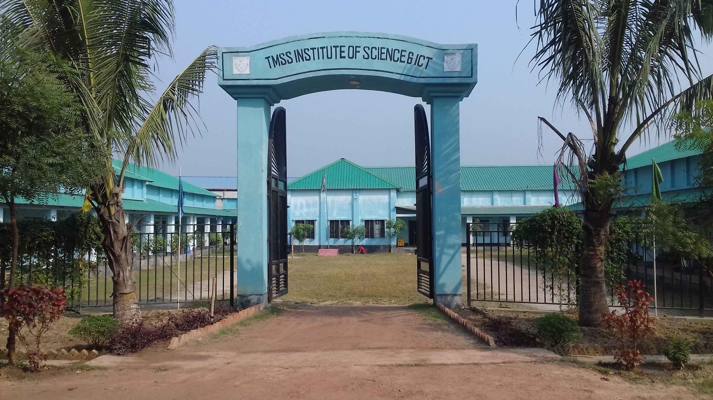
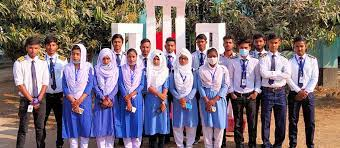
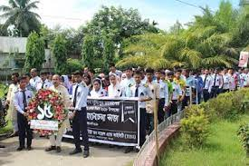
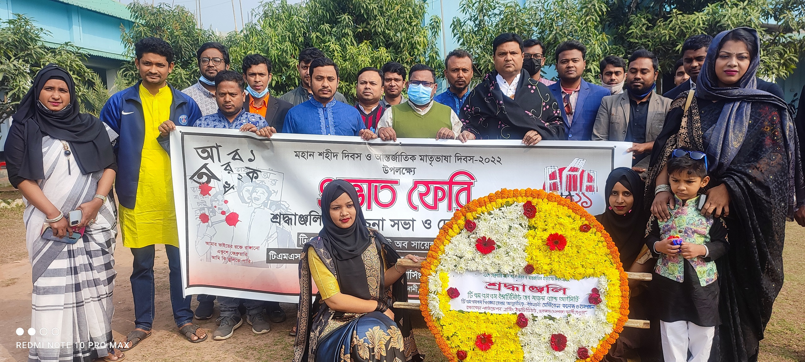

TMSS Institute of Science & ICT (TISI) is Bangladesh Govt. & Bangladesh Technical Education Board Approved Private Polytechnic Institute. It is situated at Sujabad, Bogra, Bangladesh.
   TISI is the best technical education institution. The main target of this institution is creating a skillful human resource so that Bangladesh can contribute to the world economy. The target is to remove unemployment problem from Bangladesh and to create job opportunity for all. TISI has the latest lab equipment, higher educated and special trained teachers and skillful admiration. A student can be a successful engineer by receiving technical education from TISI. History ------------ TMSS is one of the largest non-government organization in Bangladesh. It has established in 1980 in northern district of Bogura at village-Thengamara. TMSS aims to reduce poverty and develop socio-economic condition in empowering women through health, education and microfinance. Now Bangladesh is on the high way of developing country. In this situation we need mid-level skill and technical person for Bangladesh and global markets. So technical education can play vital role in Bangladesh.